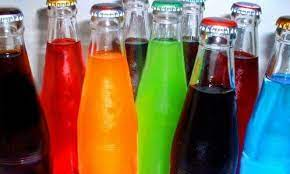
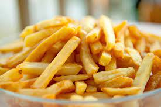
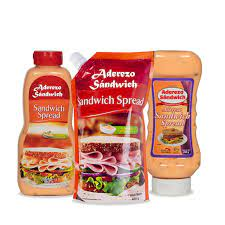

Está comprobado científicamente que tomar refrescos incrementa el riesgo de diabetes y enfermedades cardiacas, debido a su alto contenido de azúcar. Tan sólo una lata de refresco contiene el equivalente a siete cucharadas. Los refrescos light también son mala opción para la salud y deberías evitarlos ya que contienen alto contenido de fósforo, sustancia que daña los riñones y que hace que se pierda calcio en la orina, debilitando los huesos.

PAPAS FRITAS
No es tan malo que te comas una hamburguesa, siempre y cuando evites las papas, sabemos que son deliciosas, pero tienen un altísimo contenido de aceite y sal, además de que tienen muchas calorías. Mata el antojo comiéndote una o dos, tu cuerpo te lo va a agradecer.

ADEREZOS Y SALSAS ALTAS EN GRASA
Los aderezos de las ensaladas, la mayonesa, la salsa bechamel y similares tienen alto contenido de grasa saturada. Una pequeña cantidad aporta muchas calorías, por lo que es mejor evitarlos por completo. Está científicamente comprobado que el gusto por la grasa es adquirido, así que si te abstienes de consumirla por dos semanas perderás el gusto por ella y poco a poco se te va a antojar menos. ¡Inténtalo!

BEBIDAS ALCOHÓLICAS
Sí, un poco de vino es bueno para el corazón al igual que una cerveza, aún así ningún médico te va a sugerir beber alcohol para mejorar tu salud, ya que abusar de su consumo te puede llevar a sufrir enfermedades como: cirrosis, cáncer de hígado, úlceras estomacales, daño cerebral, demencia, depresión, etc. Además, el alcohol tiene alto contenido de calorías vacías que se acumulan en el cuerpo y no se queman con actividad física, y, si además lo mezclas con refresco, jugos o jarabes, la aportación calórica es muy alta. Mejor evitar su consumo.